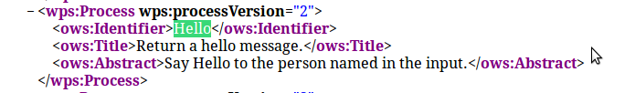

Building a "Hello World" service is a good way of understanding how ZOO services are put together.
ZOO services comprise a metadata or configuration file (.ZCFG) and a service provider file. The format of this depends on the programming language used, but we're going to use python. Publishing a service is simply a case of creating the appropriate .zcfg and .py files in the same directory as the zoo_loader.cgi file.
In the file manager, navigate to the /usr/lib/cgi-bin directory and right-click the file 'Hello.zcfg' then open it in medit. You'll see that it looks something like the following:
[Hello]
Title = Return a hello message.
Abstract = Say Hello to the person named in the input.
processVersion = 2
storeSupported = true
statusSupported = true
serviceProvider = hello_service
serviceType = Python
<DataInputs>
[name]
Title = Input string
Abstract = The name to insert in the hello message.
minOccurs = 1
maxOccurs = 1
<LiteralData>
dataType = string
<Default />
</LiteralData>
</DataInputs>
<DataOutputs>
[Result]
Title = The resulting string
Abstract = The hello message containing the input name
<LiteralData>
dataType = string
<Default />
</LiteralData>
</DataOutputs>
The first 8 lines contain metadata about the service. These include the following:
This section can also contain a <MetaData> section if you like, containing additional information about the service.
Below the metadata section are the DataInputs and DataOutputs sections. The DataInputs block contains the following:
The DataOutputs block contains very similar sections, but instead of describing the input, it's describing the output response. Therefore it doesn't need to contain the minOccurs/maxOccurs sections.
For more detailed information on the type of parameters that can be present in a .zcfg file, read the ZOO .zcfg reference.
ZOO services files in python contain functions corresponding to each of the services that you wish to publish. They can also contain helper functions for geometry processing and such like, but our first one will be as simple as possible!
Each service function must return an integer value representing the execution status of the service, as defined in the ZOO API.
Each service takes exactly three arguments, and these are in the form of python dictionaries, which are a type of Key Value Pair:
If you open hello_service.py in a text editor you will see the following:
import zoo
def Hello(conf,inputs,outputs):
outputs["result"]["value"]=\
"Hello "+inputs["name"]["value"]+" from the ZOO WPS Server!"
return zoo.SERVICE_SUCCEEDED
This contains the following sections:
Note that the service file must obey normal python tab and spacing rules, and that the output and input dictionary KVP must have the same case as their declarations in the .zcfg file.
Feel free to edit the output string so that the service returns a different response, but remember to save your file when you're done!
If you re-load your GetCapabilities Request in your browser now, and do a search for 'Hello' in the page, you should see the declaration for your Hello service, complete with the metadata from the [main] section in hello.zcfg.
The next step is to make a DescribeProcess request. Our basic URL is always going to be the following:
http://localhost/cgi-bin/zoo_loader.cgi?Service=WPS&Version=1.0.0&
We then add the correct Request type and service identifier:
Request=DescribeProcess&Identifier=Hello
So put that all together and type in a new browser tab:
http://localhost/cgi-bin/zoo_loader.cgi?Service=WPS&Version=1.0.0&Request=DescribeProcess&Identifier=Hello
The server will send you an xml response desribing how to interact with your new 'Hello' service.
Finally, it's time to Execute this service! From the DescribeProcess response we can see how to build up the URL to make a request to this service. Again we add the Request type (in this case Execute) and the service Identifier to our basic URL:
&Request=Execute&Identifier=Hello
And finally the data inputs in the form expected by the python service code:
&DataInputs=name=yourname
So putting this all together:
http://localhost/cgi-bin/zoo_loader.cgi?request=Execute&service=WPS&version=1.0.0&Identifier=Hello&DataInputs=name=yourname
If there are no mistakes in your python service file then this should provide you with an xml response, of which the wps:ProcessOutput has a wps:Data section containing the output string with the input name included in it: 